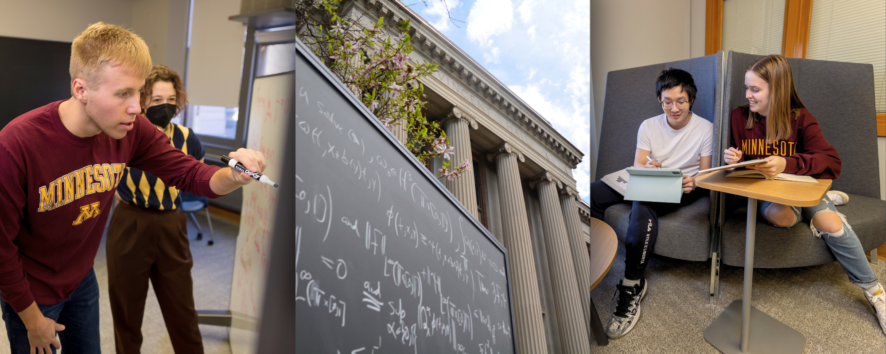
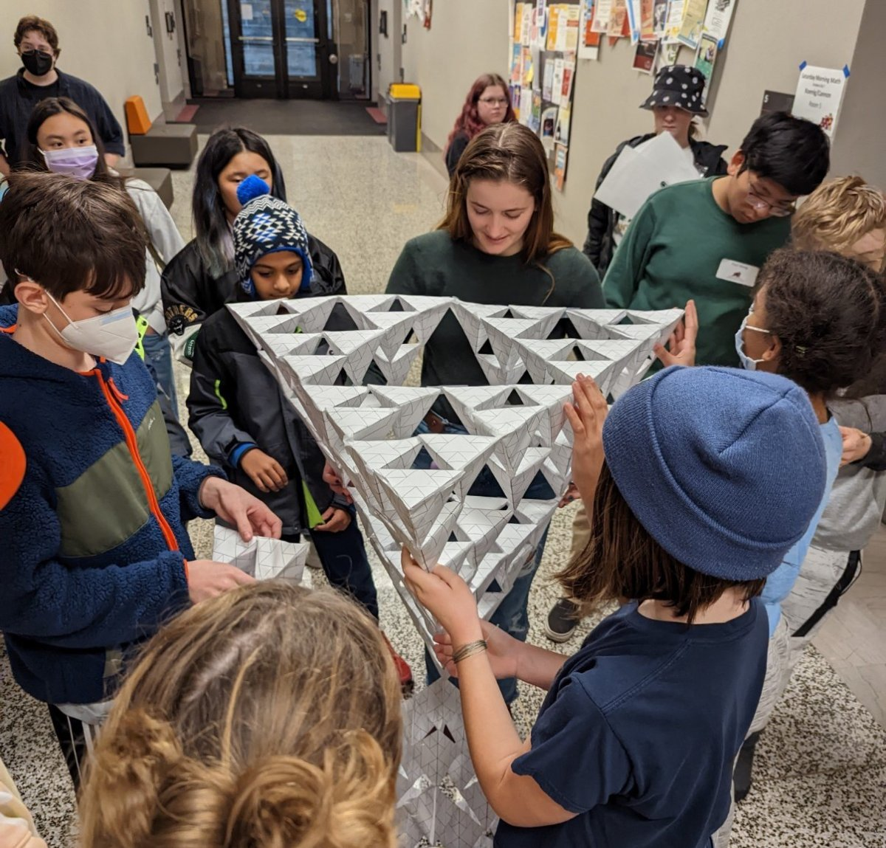

School of Mathematics
Building the foundation for innovation, collaboration, and creativity in science and engineering.
School of Mathematics News
Math major takes the field: Q & A with Brennen Lishman, UMN Marching Band Block Captain
In the classroom, Mathematics major Brennen Lishman is all about numbers. On the field, he's taking on the role of Block Captain of the University of Minnesota Marching Band.
Berkesch and Rogness honored with College of Science and Engineering faculty awards
Berkesch has been honored with the Charles E. Bowers Faculty Teaching Award, and Rogness has earned the George W. Taylor Distinguished Service Award
Jack Tavakley earns prestigious Goldwater Scholarship
Jack is a double major in Mathematics and Physics.
Our research inspires the next generation of mathematicians to solve the problems of tomorrow.
School of Mathematics Seminars & Events
